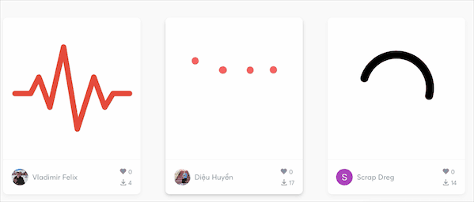

Lottie 是 Airbnb 开源的一个动画框架, 可以支持多平台,如iOS,Android,RN,Flutter等.
和平时iOS开发中用一行行代码编写的动画不同, lottie动画框架是由专业的动画设计师设计的.
然后通过Bodymovin插件进行导出,导出的文件为json文件.
Lottie官方平台网站:
https://lottiefiles.com
其原理是将通过由After Effects设计编辑的动画效果,通过json,来映射到iOS相应的动画变换类的属性中,通过CoreAnimation进行动画渲染. 相比手动写动画代码,直接导入json文件着实方便不少.

使用步骤如下:
通过CocoaPods集成Lottie框架
1
2
| #pod 'lottie-ios', '~> 3.1.6'#For Swift
pod 'lottie-ios', '~> 2.5.3'#For OC
|
然后可以尝试在Lottie网站上下载一个json动画文件,拖入到工程中,再将json文件名写入代码中,示例如下:
1
2
3
4
5
6
7
8
| LOTAnimationView * animationView = [LOTAnimationView animationNamed:@"222-trail-loading"];
animationView.loopAnimation = YES;
animationView.frame = self.view.bounds;
[self.view addSubview:animationView];
[animationView playWithCompletion:^(BOOL animationFinished) {
//动画完成后执行
//当loopAnimation = YES时,循环播放的时候不执行
}];
|
Lottie还有一些其他的属性,如手势联动动画,配合LOTAnimationView 的 animationProgress 属性进行控制;
1
2
3
4
5
6
7
8
9
| @property (nonatomic, readonly) BOOL isAnimationPlaying;//判断动画是否在播放
@property (nonatomic, assign) BOOL loopAnimation;//是否要循环播放动画
@property (nonatomic, assign) CGFloat animationProgress;//自定义动画的播放进度
@property (nonatomic, assign) CGFloat animationSpeed;//自定义动画的播放速度
@property (nonatomic, readonly) CGFloat animationDuration;//自定义动画的播放时长
|
Lottie也支持自定义页面切换的过场动画,通过设置 present／dismiss controller 转场动画, 在需要转场效果的VC中实现UIViewControllerTransitioningDelegate代理中下面的两个方法:
1
2
3
4
5
6
7
8
9
10
11
12
13
14
15
16
|
#pragma mark -- 定制转场动画
// 代理返回推出控制器的动画
- (id<UIViewControllerAnimatedTransitioning>)animationControllerForPresentedController:(UIViewController *)presented presentingController:(UIViewController *)presenting sourceController:(UIViewController *)source {
LOTAnimationTransitionController *animationController = [[LOTAnimationTransitionController alloc] initWithAnimationNamed:@"转场动画json名1" fromLayerNamed:@"来自哪个图层的图层名1" toLayerNamed:@"去到哪个图层的图层名1" applyAnimationTransform:NO];
return animationController;
}
// 代理返回退出控制器的动画
- (id<UIViewControllerAnimatedTransitioning>)animationControllerForDismissedController:(UIViewController *)dismissed {
LOTAnimationTransitionController *animationController = [[LOTAnimationTransitionController alloc] initWithAnimationNamed:@"转场动画json名2" fromLayerNamed:@"来自哪个图层的图层名2" toLayerNamed:@"去到哪个图层的图层名2" applyAnimationTransform:NO];
return animationController;
}
//后两个属性fromLayerNamed,toLayerNamed 可不填
|
最后附上Lottie的iOS/Mac版官方教程地址:
http://airbnb.io/lottie/#/ios
原文作者: Wickyong
原文链接: https://Wickyong.github.io/2020/04/11/2020-4-11/
版权声明: 转载请注明出处(请保留原文作者署名及原文链接)#copyright description